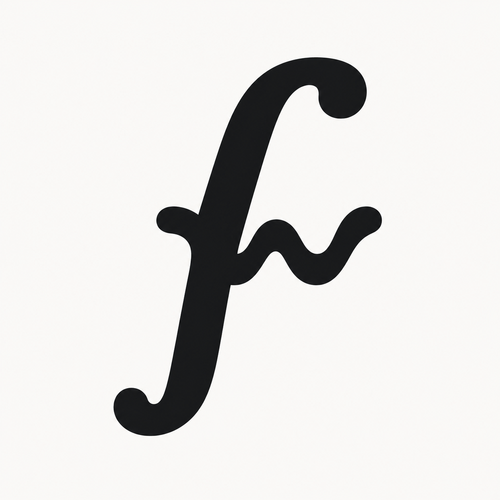
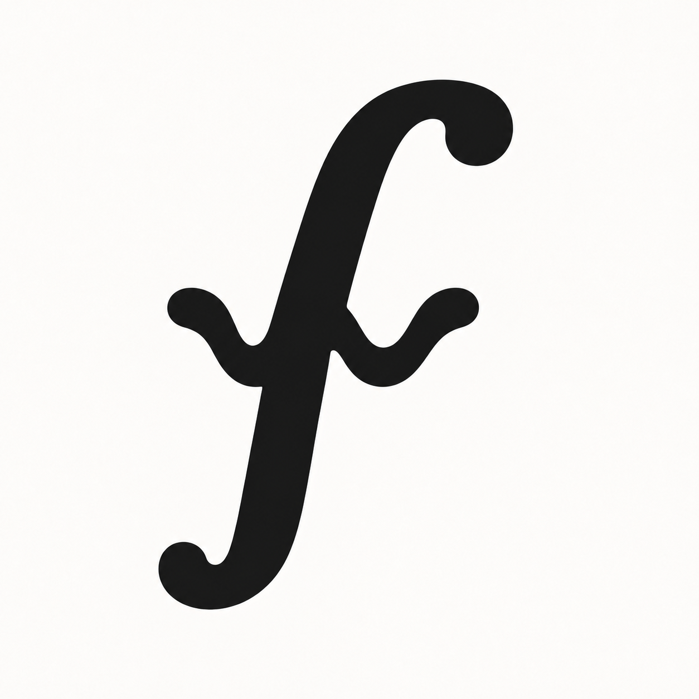
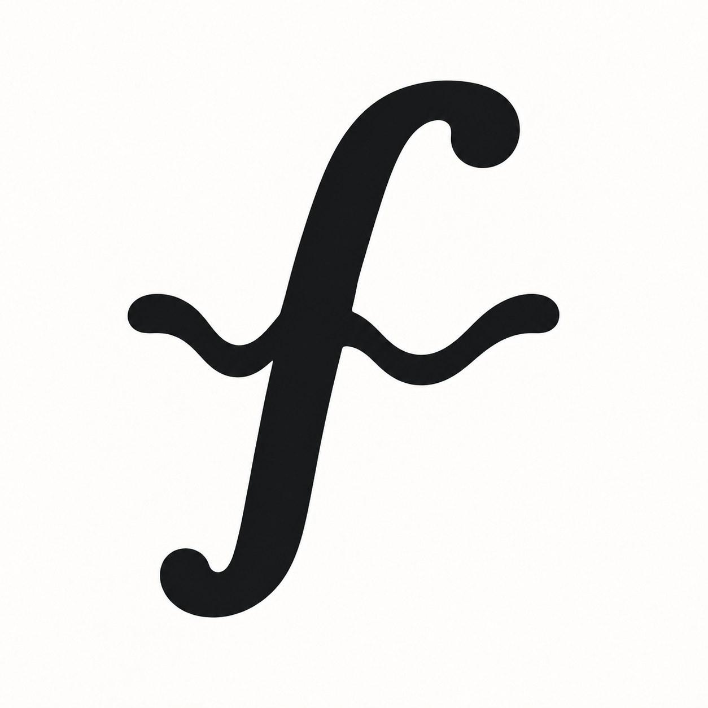
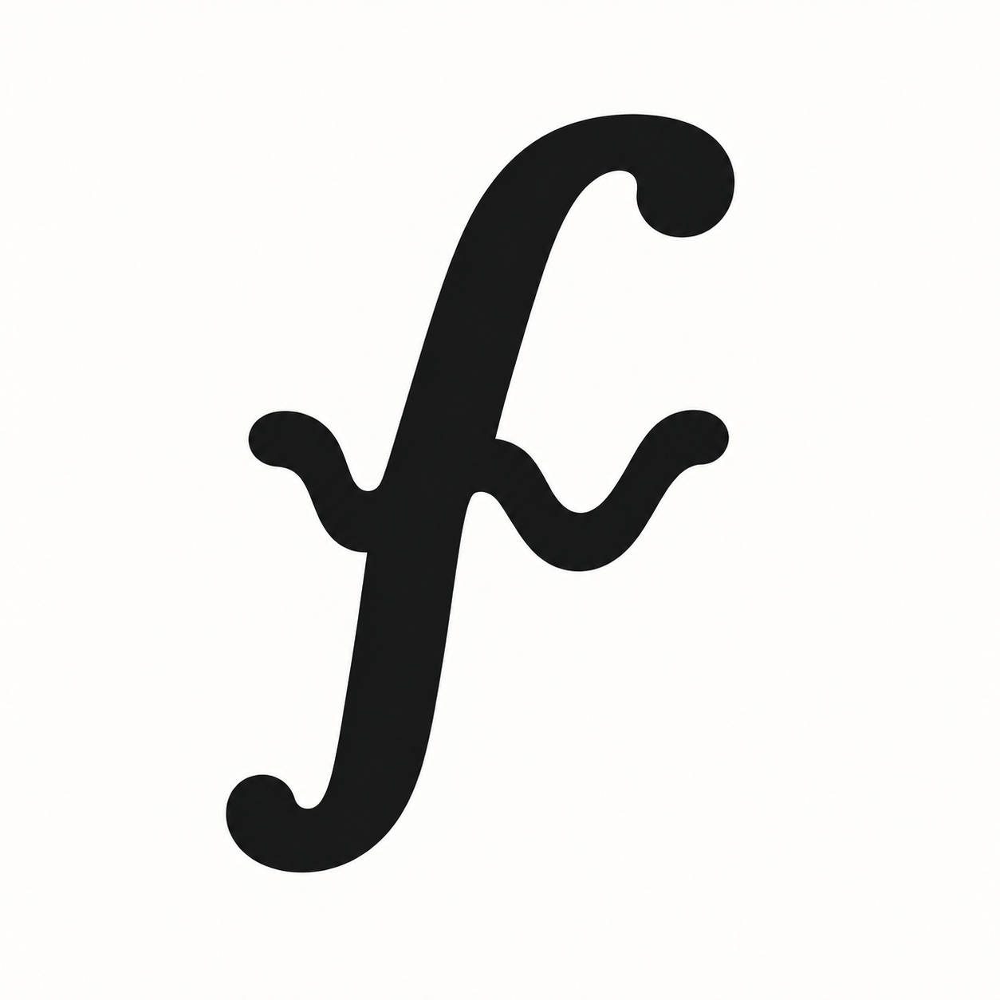

Center the wave.
Original B beside three variations with the middle peak of the w aligned to the ƒ stem. Compare the width, depth, and weight of the crossbar. Select an image to view it full size.

B · Original
The offset wave, kept here as the reference.
16 px32 px64 px
flopwire

D · Balanced center
Medium width and depth, with a visible dip on each side of the stem.
16 px32 px64 px
flopwire

E · Wide & shallow
A wider, lighter wave. More like a crossbar, with a quieter w.
16 px32 px64 px
flopwire

F · Deep & bold
A deeper, heavier wave. The w reads more strongly, with a denser junction.
16 px32 px64 px
flopwire